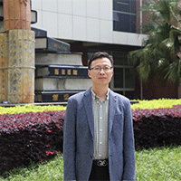

学院领导

陈勇，中共党员，副教授，计算机学院院长助理。毕业于西南交通大学数学与应用数学专业， 研究方向：应用统计，主讲课程《高等数学》、《微积分》等。校级应用型示范教学团队—数 学与数学建模教学团队负责人，主持和主研校级以上科研项目6项，发表教改、学术论文10余 篇，主编（副主编）教材5部。荣获四川省高校第三届青年教师教学竞赛优秀奖、四川工商学 院青年教师授课比赛一等奖、四川工商学院教学成果奖4项，指导学生参加全国大学生数学建 模竞赛、美国大学生数学建模竞赛获奖8项。